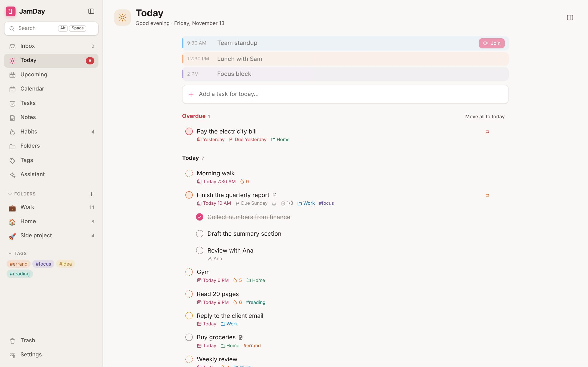
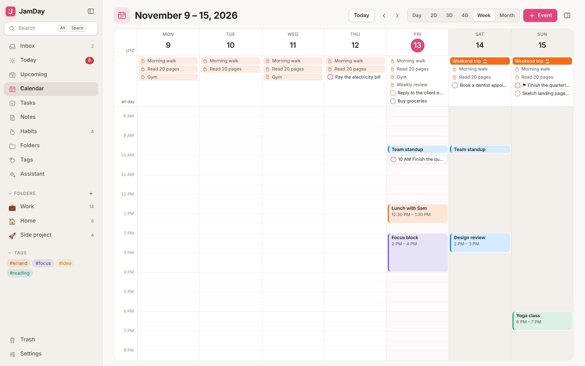
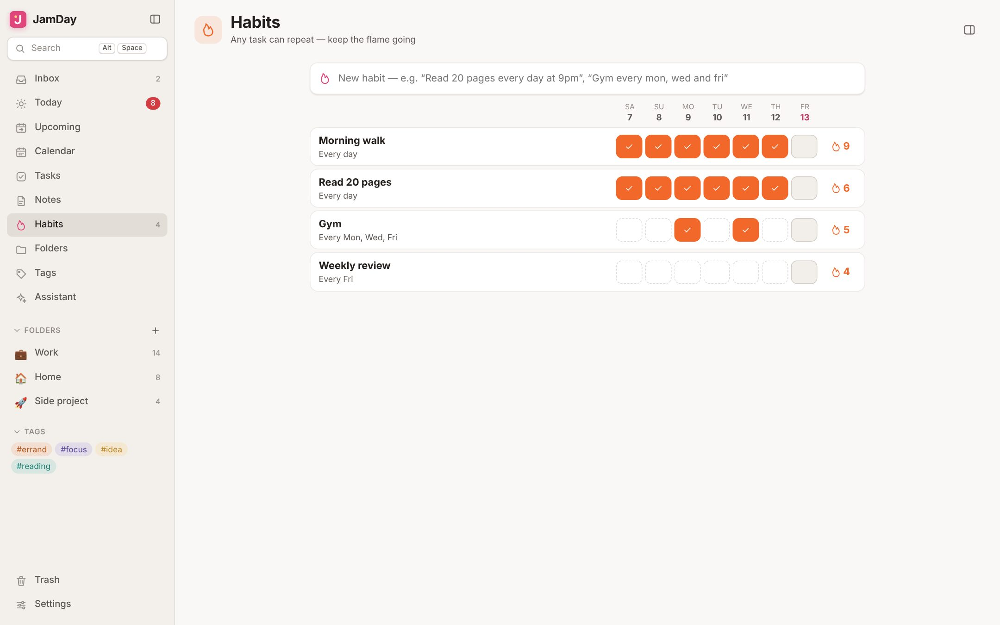
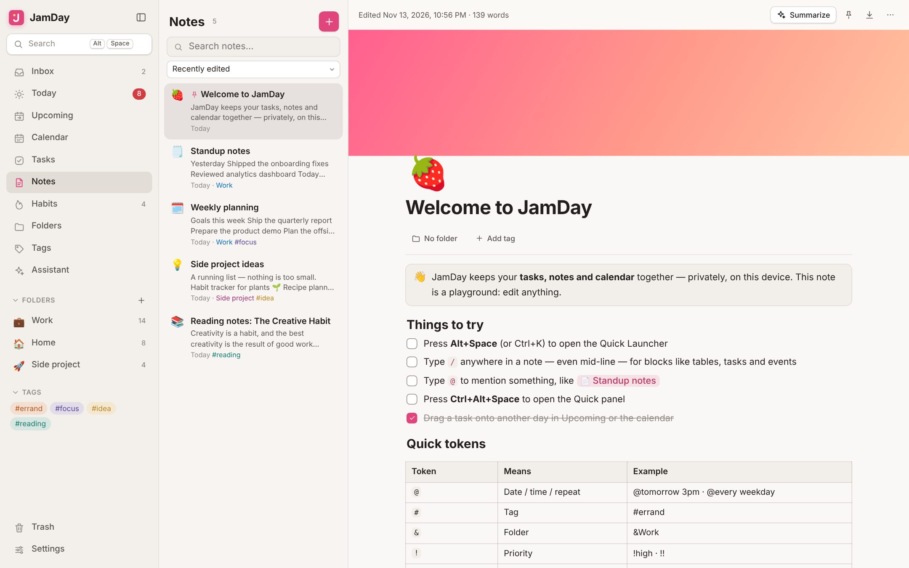
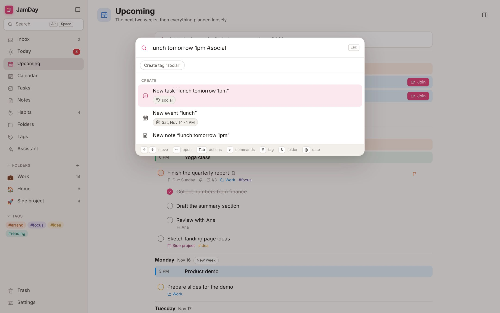
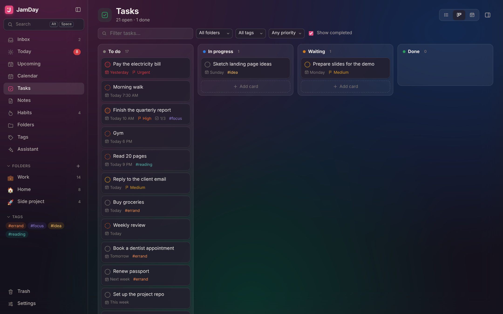

Tasks, Notes & Calendar.
One beautiful Googlebook app.
JamDay brings your to-dos, habits, notes and schedule together in one fast, private app. Install it from Chrome in a click, and it keeps working offline.
No account needed · Works offline · Your data stays on your device

Everything you need, together
Plan the day, capture ideas and keep your habits going — without juggling five apps.
Calendar & events
Day, 2/3/4-day, week and month views. Drag to create, move and resize. Optional Google Calendar connection.
Tasks & habits
Due dates, priorities, subtasks, Kanban and flexible “this week / someday” planning. Any task can become a habit with streaks.
Notes & documents
A block editor with tables, to-dos, images, covers and @ mentions. Create tasks and events right inside a page.
Folders & tags
Folders hold notes, tasks and events together. Tags get their own pages, colours and icons.
Quick Launcher
Press Alt Space to search everything and create anything with quick tokens.
Quick panel
A companion panel for Today, Calendar, Tasks, Events and Notes — as a dropdown, floating window or docked to an edge.
AI, your way
On-device rewrite and summarize, plus an optional assistant with your own key. Off by default.
Local & private
No account and no tracking. Optional sync through your own Google Drive.
Your whole week, at a glance
See events, tasks and habits side by side, then drag things around until the week makes sense.
- Day, 2-, 3- and 4-day, week and month views, with a live “now” line
- Google Calendar: reads ~2 weeks back and 3 months ahead; events stay in memory only
- Optional two-way sync for events made in JamDay, with Google Meet links
- Join meetings from the event, agenda or quick panel
- Link tasks and notes to events, and file events in folders and tags
- Import any calendar from an .ics file

Plan loosely. Finish for real.
Give tasks a day, a week, a month — or “Someday”. Type naturally: Call Ana @tomorrow 3pm #home &Family !high
- Plain-language dates: “next fri 4pm”, “in 2 weeks”, “every weekday”
- Quick tokens: @ date, # tag, & folder, ! priority, + person
- Priorities, statuses, deadlines, subtasks, rich notes and attachments up to 100 MB
- Habits with streaks — the 🔥 flame shows in Today, Upcoming and the calendar
- List, Kanban board and calendar views, plus Inbox, Today and Upcoming
- Local reminders for tasks, events, habits and a daily summary

Notes that connect to everything
Write with blocks, then link the tasks, events and notes you mention. Type / anywhere — even mid-line.
- Headings, lists, to-dos, quotes, callouts, code, dividers, images and tables
- @ mentions of tasks, events and notes become live links, with backlinks
- Create tasks, subtasks, events and sub-notes from inside a page
- Covers from a built-in artwork gallery, emoji or uploaded icons
- Import Markdown and PDF; export any note as Markdown
- On-device AI to rewrite or summarize a selection

Everything is one shortcut away
Press Alt Space (or Ctrl K) from anywhere in JamDay.
- Search tasks, notes, events, folders and tags
- Create tasks, events and notes from one line
- Type > for commands and Tab for quick actions
- # tag, & folder, @ date filters
- Open the quick panel with Ctrl Alt Space, or by touching the screen edge

Light, dark — or glass
Pick a theme and an accent colour, reorder the sidebar, and set your own shortcuts.
- Light, dark and translucent glass themes
- Show, hide and reorder sidebar sections
- Trash with restore, a built-in demo and a feature tour
- Updates install automatically the next time you open JamDay

Pay once. Keep it forever.
No subscription. Try everything first, then buy when you’re ready.
- Lifetime access and lifetime updates
- All features unlocked
- One person, up to 2 devices
- 14-day money-back guarantee — just email us
Prices in USD, excluding VAT.
Questions, answered
What is JamDay?
JamDay keeps your tasks, habits, notes and calendar together in one fast app. It is built for Googlebooks and Chromebooks: you install it straight from Chrome, it opens in its own window, and it keeps working offline.
Which devices does it run on? Is there a phone app?
Any device with a recent version of Chrome or Edge: Googlebooks, Chromebooks, Android tablets and phones, Windows, Mac and Linux. The layout adapts to small screens, so you can also install it on an Android phone from Chrome. There is no separate app-store app yet.
Where is my data stored? Is it private?
Everything is stored in a local database on your device. There is no account, and JamDay collects no analytics, telemetry, crash reports or location data.
Does it sync across my devices?
Yes, if you want it to. Turn on Google Drive sync in Settings ▸ Integrations: JamDay keeps one private file in Drive’s hidden app-data folder that only JamDay can read. You can also export and import full backups at any time.
Does it work with Google Calendar or Outlook?
You can connect Google Calendar directly. JamDay reads about two weeks back and three months ahead. Optional two-way sync creates, edits and deletes only the events you make in JamDay, and can add Google Meet links. Outlook and other calendars can be brought in with an .ics calendar file.
What can the AI do, and is it private?
Rewrite and summarize run on-device with Chrome’s built-in AI where it’s available. The AI assistant is optional and off by default: you use your own Claude, ChatGPT, Gemini or Grok key, and it only runs when you send a message. The items you choose to share go to the provider you picked.
How much does it cost?
A one-time payment of $19 (limited early price, normally $39). You get lifetime access and lifetime updates, with every feature unlocked.
How many devices can I use it on?
One license is for one person on up to 2 devices.
Is there a free trial?
Yes. Open JamDay in your browser and try every feature before you buy. Purchases also come with a 14-day money-back guarantee.
How do I get help?
Read Help & docs, or email hello@jamday.app. You can also share feedback.
Install JamDay in under a minute
No store, no account. JamDay installs straight from Chrome.
Open JamDay
Open JamDay in Chrome on your Googlebook or Chromebook.
Install
Click the install icon in the address bar, or open Chrome’s menu ▸ Cast, save and share ▸ Install page as app.
Pin it
Find JamDay in your launcher and pin it to the shelf. It opens in its own window and works offline.
Requires a recent version of Chrome or Edge. Also runs on Android, Windows, Mac and Linux.